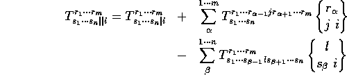

Unlike ordinary differentiation, which requires only the coordinate names, covariant differentiation requires the existence of Christoffel symbols of the second kind, and hence of a metric. Covariant differentiation is accomplised by first taking the ordinary derivative of the object in question, and then forming contractions of each of the objects' indices with those of the Christoffel symbol:

It is apparent from this definition that covariant derivatives are non-trivial to compute. Although for a simple metric like RW it takes only a few seconds to compute the covariant derivative of the Riemann tensor, for more complicated metrics it can take quite some time; and higher level derivatives can take several minutes to compute even for simple metrics.
The || operator placed in an objects' index causes the covariant derivative to be computed when the object is involved in an indexed assignment. The function cov(), which is also callable by the user and takes an indexed object as its single argument, is used to do the computation. The output is the name of an indexed object in the form <input>_CD<#>, where <#> is an integer that distinguishes higher order derivatives. The covariant derivative will have the same symmetries as the input, and the same index structure with the addition of a single covariant tensor index. The covariant derivative is stored on the input object's property list under the key cov, in the same format as used for ordinary derivatives; whenever cov() is called it looks there first to determine if the covariant derivative object already exists.
Although the user can indicate multiple covariant derivatives, as in T[a,b,||e,f], cov() computes them individually; higher order derivatives have the order appended to the name, as noted above. The argument to cov() can include an index, but it is not used except to determine if a shift is also being requested (see below). Note that any index used in the argument to cov() should not contain the covariant derivative operator || or an extra index, since the index applies to the object whose derivative is being computed. The printed output of a covariant derivative is similar to that for ordinary derivatives: the printname is that of the parent and the index is printed with the covariant derivative operator in place.
As with the ordinary derivative, a fixed index including a covariant derivative operator may be applied to an object to access the specified value, but only after the covariant derivative has been computed. If it has not, the operation returns unevaluated.
#: cov(g1_R); computing g1_R_CD g1_R_CD #: g1_R[1,0,1,0,||0]; rt rt - rt rt t,3 t,2 tCovariant differentiation is not restricted to tensors alone, objects with other types of indices may also be arguments to cov(). In each case the single new index will be a covariant tensor index. The Christoffel symbols used are computed by functions attached to each index-type by defindextype(); for tensor indices the Christoffel symbols are computed by christoffel2(), for spinor indices by the function spchristoffel(), neither frame nor dyad indices have Christoffel symbols. In these cases the covariant derivative reduces to the ordinary derivative. Covariant differentiation is not defined for array indices.
To ensure the correct Christoffel symbols (and the correct coordinates for ordinary differentiation) are used, cov() will change the current-metric to that specified on the altmetric property of the input. When christoffel2() is called to compute or find the second Christoffel symbols, it will look at that metric under the christoffel2 property for the name of an indexed object with the proper index structure (i.e. '(1 -1 -1)). In the example of the last chapter, since christoffel2() was not called by the user it would not have found a pre-made object, and would have attempted to compute it. This could have been prevented by the command
#: lisp put ('h, 'christoffel2, 'hc2);
hc2
Some objects, specifically metrics and the Einstein tensor, have
known covariant derivatives, namely 0. The functions that create
metrics put the value 0 under the cov property so that
cov() will immediately return 0.